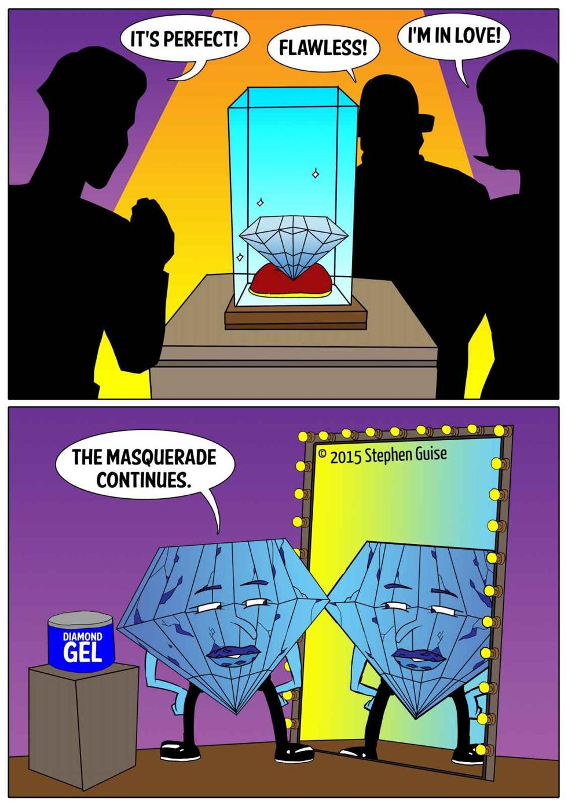

Chapter 1
Introduction
“To be yourself in a world that is constantly trying to make you something else is the greatest accomplishment.”
~ Ralph Waldo Emerson
“When the Japanese mend broken objects, they aggrandize the damage by filling the cracks with gold. They believe that when something’s suffered damage and has a history it becomes more beautiful.”
~ Barbara Bloom
